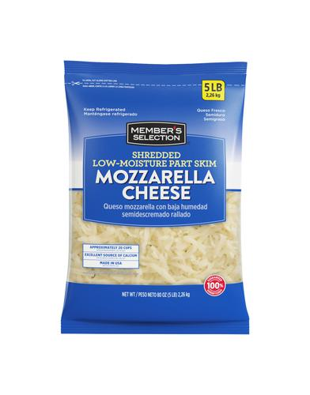

Member's Selection Queso Mozzarella Rallado 2.26 kg / 5 lb.
PRODUCT DETAIL
Producto importado, nuestro queso mozzarella rallado, semidescremado
y bajo en humedad, es una excelente fuente de calcio para tu dieta diaria.
Contiene aproximadamente 20 tazas de queso, una cantidad práctica para diversas
comidas y platos. Ideal para agregar a pastas, ensaladas, pizzas, fruta y mucho más.